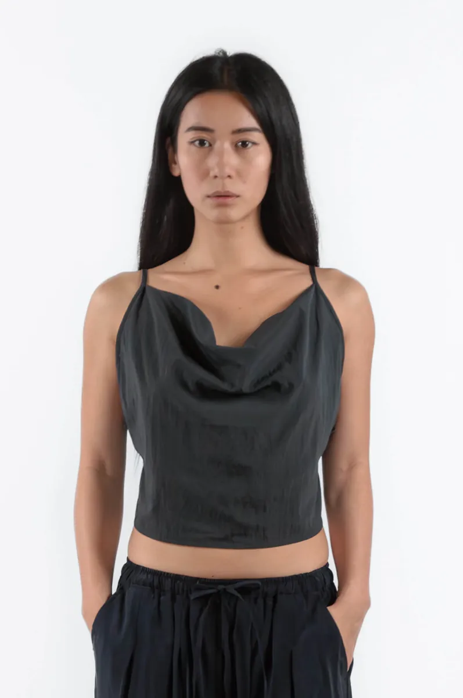
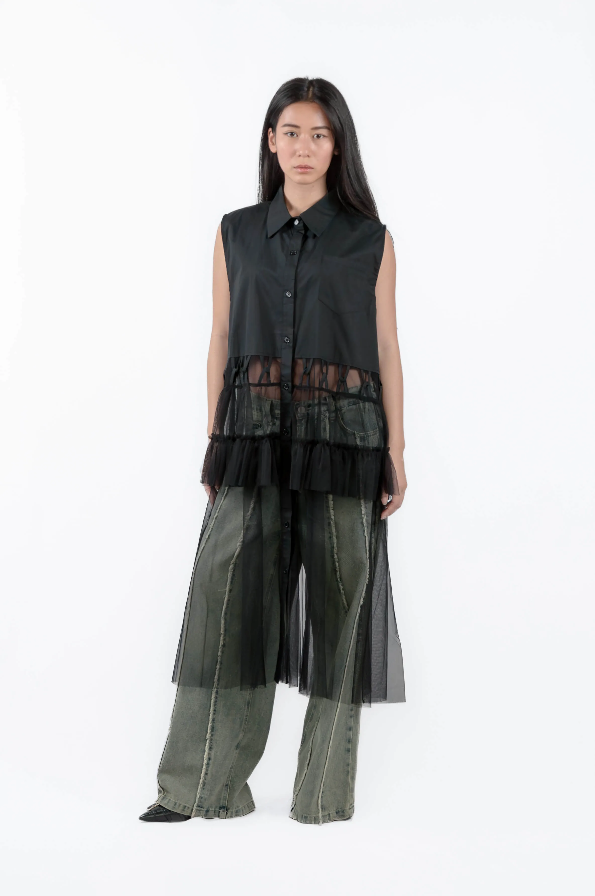
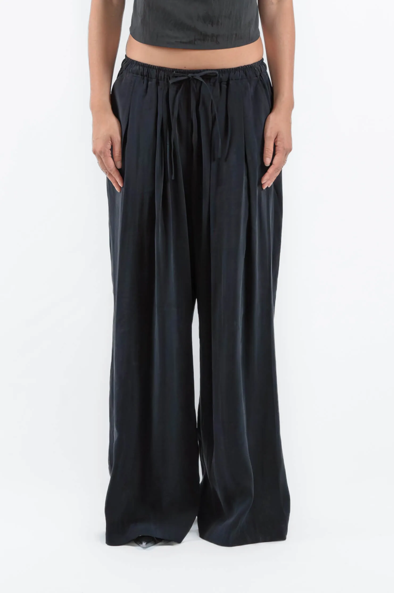
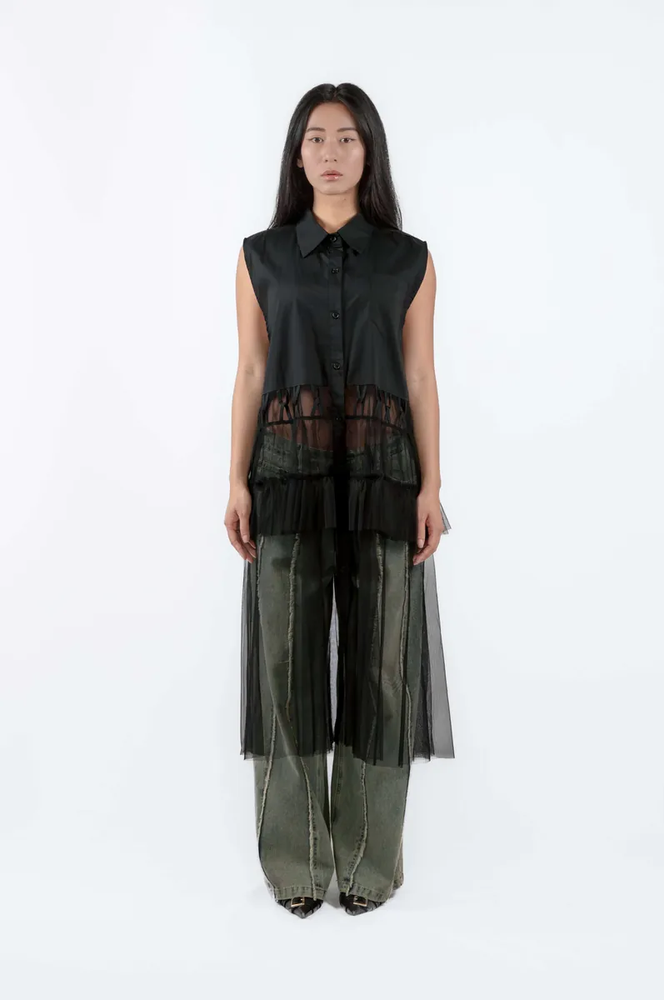
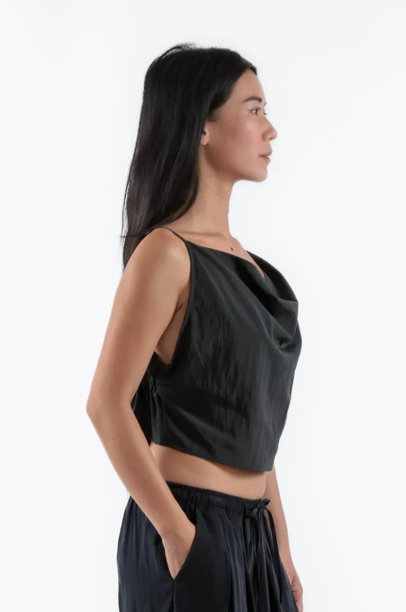
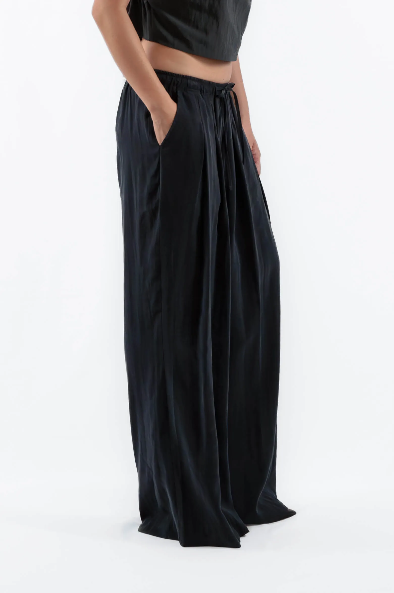
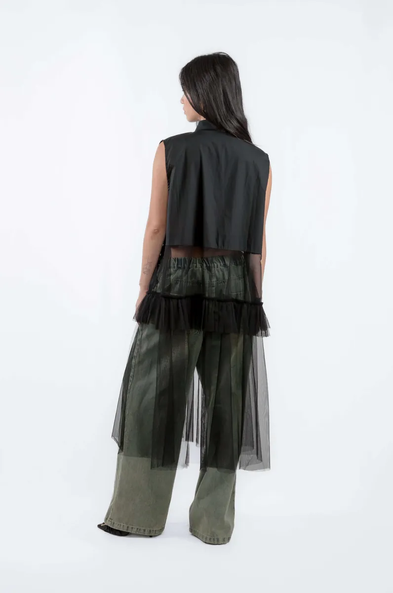

Minimalist Summer Outfits: Less Is More in 2026
Summer dressing is where minimalism is most tested. Heat removes layering as an option. The pieces that remain need to work on their own: to carry the outfit without support from a coat, a knit, or a second layer. Here's how to dress minimally in summer without losing the considered quality that makes the aesthetic work.
Minimalist summer outfits in 2026: fabric rules, palette, fluid silhouettes, and three complete looks from einHaru Collective, Berlin.

In summer, fabric is the whole conversation
The fabric determines everything in summer: how the piece moves, how it breathes, how it photographs. The materials that work best are those that keep visual weight light: sheer mesh, lightweight nylon blends, crinkled cottons, and fluid synthetics that drape rather than cling.
Sheer and mesh fabrics are a summer-specific solution. The layered construction creates depth and interest while air moves through freely. The Draped Layered Top works in summer precisely because the fabric layers create movement and dimension without adding warmth or weight.

Summer palette: go lighter without going casual
The minimalist summer palette shifts from the dark anchor tones of winter toward light neutrals: ivory, white, stone, sand. Or it stays dark but uses sheer fabric to lighten the visual weight. A black sheer dress reads as summer in a way a black wool dress doesn't.
The risk with a lighter palette is looking casual rather than considered. The fix is silhouette: keep the shapes deliberate and the palette light, and the combination reads as intentional.
Silhouette: fluid but not shapeless
Summer minimalism doesn't mean fitted, it means fluid. The Fluid Wide Leg Pants in dark blue move with the body in heat rather than holding a rigid shape. Paired with a draped or sheer top, the outfit has enough volume to feel effortless and enough structure to read as considered.

The Sleeveless Shirt Dress with Tulle Overlay is the summer one-piece option: structured bodice, tulle skirt that moves in heat, button-down front that means you can wear it open over trousers when the temperature drops in the evening.

Four minimalist summer outfits
Look 1 — Draped and fluid
Draped Layered Top + Fluid Wide Leg Pants in dark blue + leather flat, no accessories. Both pieces move; neither structure. The palette stays tonal — the silhouette is the statement.
Look 2 — Dress as a layer
Sleeveless Shirt Dress with Tulle Overlay worn open over a black wide-leg trouser. Minimal sandal, structured bag. One piece extends into a complete outfit; the tulle moves in heat without adding weight.
Look 3 — Wrap and volume
Bijo Shirt in light ivory worn open over a ribbed tank + Beaker Pants in charcoal. The wrap neckline reads as intentional even with the shirt relaxed. The volume is in the trouser; the top stays close. No accessories needed.
Look 4 — One colour story
Mesh Cropped Tank in white + Crinkled Tiered Skirt + leather slide + one thin gold ring. Two pieces, one neutral. Everything is either the lightest tone or the simplest shape.
Summer-ready pieces from einHaru

Draped Layered Blouse Top in Black
A fluid layered top with natural draping and subtle asymmetry. Lightweight, moves without clinging: the summer top that reads as designed rather than default.
View product
Fluid Wide Leg Pants in Dark Blue
Mid-rise, wide leg, lightweight construction. Moves with the body in heat, pairs with everything from minimal tanks to structured tops. The summer trouser that works across every context.
View product
Sleeveless Shirt Dress with Tulle Overlay
Structured bodice, tiered tulle skirt, button-down front. Wear as a dress or open over trousers: one piece, two functions, entirely summer-appropriate.
View product
Bijo Shirt in Light Ivory
Oversized Nylon-Tencel shirt with a sculptural high wrap neckline. Smooth and breathable in heat — wear closed for a clean silhouette or open over a tank for something more laid-back.
View product
Beaker Pants in Charcoal
Wide-leg wool trousers in a deep beaker silhouette. Pairs with a sheer or lightweight top for a complete minimalist summer look: volume below, ease above.
View productContinue reading: How to Style Wide Leg Trousers or What to Wear in Berlin.
Common Questions
What makes an outfit minimalist in summer?
A minimalist summer outfit reduces the piece count to one or two intentional items — a single garment with a strong silhouette, or two pieces in a consistent neutral palette. In summer, fabric does the work: sheer layers, fluid synthetics, or lightweight natural blends replace the structure that a coat or knit usually provides in cooler months.
What are the best minimalist summer colours?
Off-white, ivory, sand, stone, and light grey sit at the lighter end of the spectrum. Charcoal and black still work in summer if the fabric is sheer or lightweight enough that the garment reads as warm-weather. Single-colour dressing — tonal or monochrome — almost always reads more considered than mixing. Avoid prints: they add visual noise without adding substance.
How do you dress minimally in summer without looking underdressed?
Silhouette is the signal. A fluid wide-leg trouser or a tailored sheer shirt with a clean line reads as intentional even in heat. The common mistake is defaulting to fitted basics: a cropped tank and shorts is summer dressing, but it is not minimalist dressing. The difference is in the proportions and the deliberateness of the fabric choice.